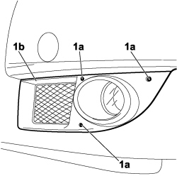
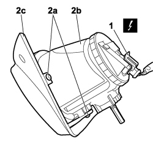

5540D10 L/H OR R/H FOG LIGHT (ONE) - R+R
- Path
- Procedures > 55 ELECTRICAL EQUIPMENT > 5540 EXTERIOR LIGHTING > 5540D FOG LIGHTS > 5540D10 L/H OR R/H FOG LIGHT (ONE) - R+R
- Kind
- repair procedure (removal / refitting; the operation number is the code)
- Applies to
- engines: 1.4 8v, 1.6 16v, 1.3 JTD 16V, 1.9 JTD 8V; all production periods
- Interactive page
- https://sloeber94.github.io/elrnDB-fDbl/en/#/223000169
Applies to: engines: 1.4 8v, 1.6 16v, 1.3 JTD 16V, 1.9 JTD 8V; production: da 12/03; only with equipment: MY 2005
 Removing
Removing
 Refitting
Refitting- Lift the bonnet
- Turn the ignition key to the OFF position.
- Disconnect the negative battery terminal.
Description | Connector | |
|---|---|---|
BATTERY |
1. Undo the bolts (1a) fixing the left front grille (1b) and partly extract it from its housing.

Applies to: engines: 1.4 8v, 1.6 16v, 1.3 JTD 16V, 1.9 JTD 8V; production: da 12/03; only with equipment: MY 2005
1. Disconnect the electrical connection from the fog light.
2. Unscrew bolts (2a) securing foglamp (2b) and separate it from front side grille (2c).
Description | Connector | |
|---|---|---|
2a | LEFT HEADLAMP |
Description | Connector | |
|---|---|---|
2a | RIGHT HEADLAMP |

Applies to: engines: 1.4 8v, 1.6 16v, 1.3 JTD 16V, 1.9 JTD 8V; production: da 12/03; only with equipment: MY 2005
Refitting
Removing- Check that the fog lamp is not damaged.
- Position the fog lamp on the front side grille and secure with bolts.
- Connect the electrical connection to the fog light.
Description | Connector | |
|---|---|---|
LEFT HEADLAMP |
Description | Connector | |
|---|---|---|
RIGHT HEADLAMP |
- Position the front side grille in its seat and secure to the front bumper, tightening the bolts.
- Connect the negative battery terminal.
Description | Connector | |
|---|---|---|
BATTERY |